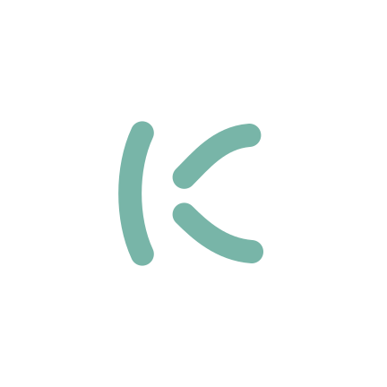

Application icon
The flat master stays crisp at small sizes. The rounded corners belong to this desktop and web treatment.
An open “k” drawn with three soft strokes, set in ink, birch and teal. This is Kuiske’s first identity direction. The SVG files are the editable sources; everything else is exported from them.


#152F31#F5F1E8#78B5A8#D1DBBCThe flat master stays crisp at small sizes. The rounded corners belong to this desktop and web treatment.
Original lettering made from paths, with no font dependency.

A scalable family of curves for backgrounds and framing.

A black template mark for the macOS menu bar, a 16-pixel symbolic icon for GNOME, a maskable icon with the mark inside the safe zone, and an Android adaptive foreground on an ink background.

The vector identity on the generated background. Each size has a PNG and a self-contained editable SVG.
AI-generated artwork in the same palette. The SVG mark and icon above remain the production masters.

An airy composition with room on the left for text. The landing page uses a square crop of the forms.

Natural texture and diffuse northern light for the wider family.
An optional treatment matched from PNG references. Use the SVG master for exact geometry and small sizes.

A quiet background for share cards. Keep copy on the left.
Use the ink mark on birch and the teal or birch mark on ink. Keep at least one stroke’s width of clear space. At small sizes, use the icon without the wordmark. Teal is an accent; use ink for text on birch.
The SVGs are editable source artwork, and the exports can be regenerated from them. Site code and the original vector identity use the repository’s MIT license.